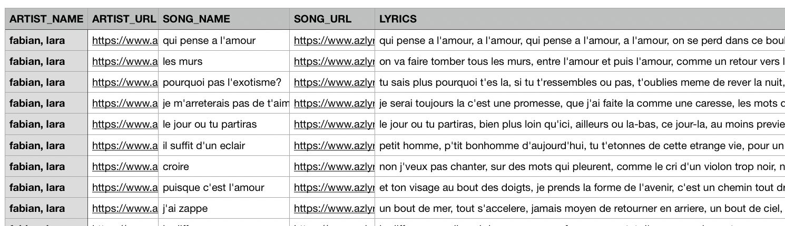
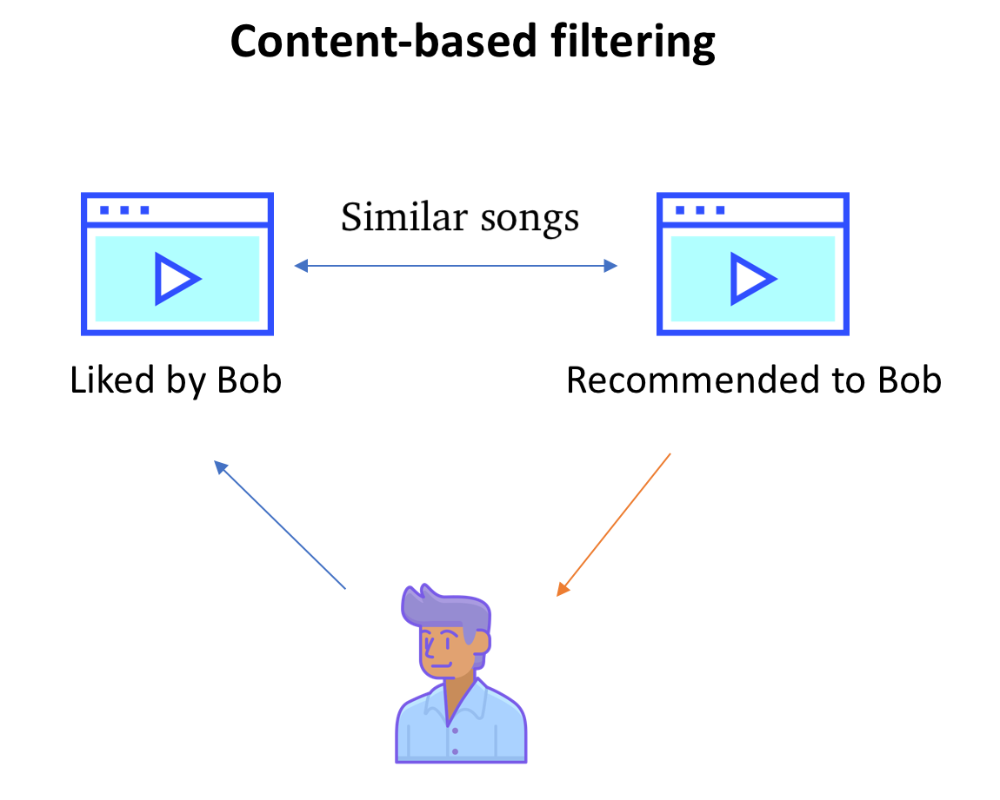
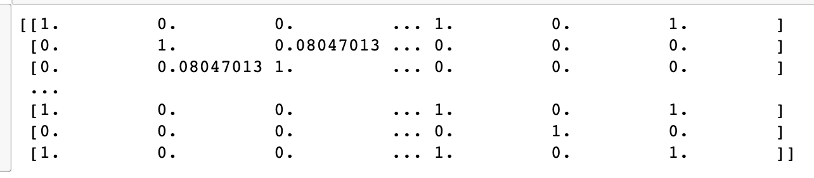
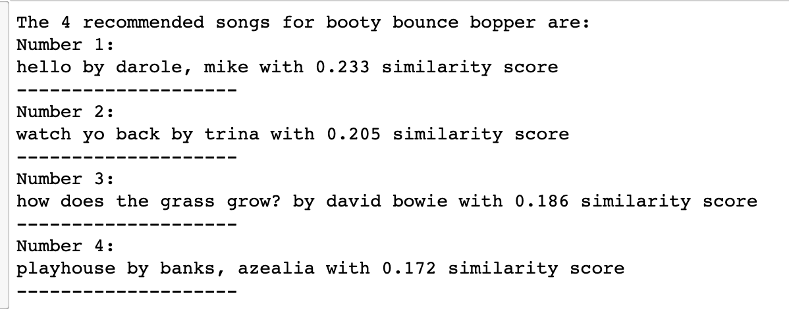
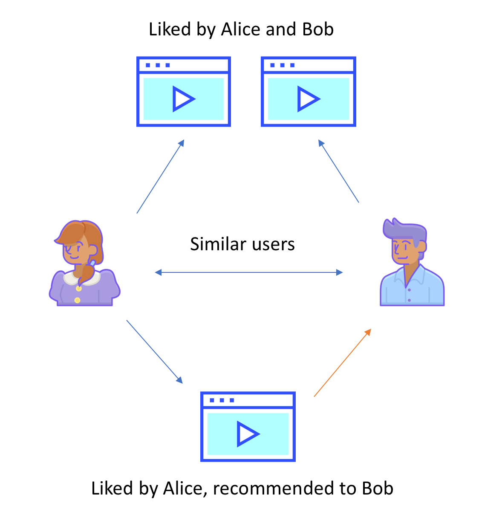
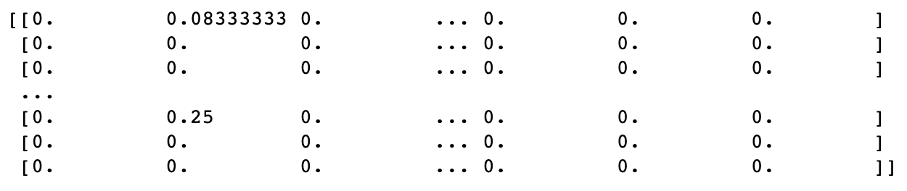
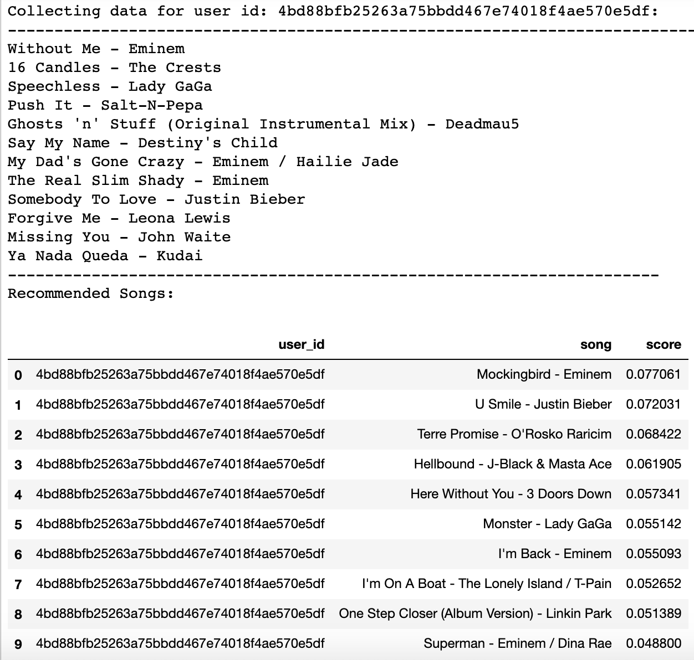
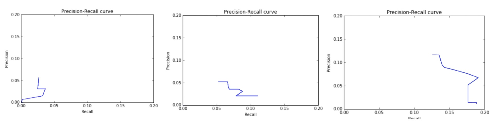

Background
Music is an expression of art widely appreciated by millions of people all over the world. Every individual has a unique playlist and set of preferred genres catered to their own interest. Being that there are over 100 million recorded songs on the internet and musical streaming applications, it can be intimidating for someone to try and find new songs on their own. How could an individual expand their musical collection and add to their current libraries in a simple and non-overwhelming way?
Introduction
Our group has decided on designing a predictive model that will give music listeners a recommended playlist and songs based on their preferences. Online music streaming services have been a dominating medium for people to use.
We want to take advantage of the information provided to us from user accounts to give listeners the best musical experience. We will do this by providing a consistent, accurate, and satisfying playlist of songs in hopes that they will enjoy the recommended selection. We want to implement two different approaches: content-based filtering and collaborative filtering.
Data Collection
Using Kaggle's free data sets, we compiled 27 csv files of song information, each consisting of information about roughly 1000 songs. The columns of the data include song names, the artists, URLs, and lyrics. This information was compiled from azlyrics.com (Reference 1). A few entries from the data can be seen below.
Content-based Filtering Method
Introduction
Content-based filtering filters content based on an analysis of both the item being recommended and the user's preferences. Content-based filtering closely examines the actual item, in this case a song, to determine which features are most important in making recommendations and how those features interact with the user’s preferences. Data collection for this process is considered more difficult since it is hard to select which features of an item will be important in creating a predictive model. For the purpose of this project, we decided to take the keyword matching approach, where we analyzed our dataset based on the user-provided song and song lyrics.
TF-IDF Technique
TF-IDF stands for Term Frequency-Inverse Document Frequency. The term frequency measures how often a word appears relative to the total number of words in each entry. The inverse document frequency measures how important the given word is in the context of the entire selection. The rarer a word is, the higher its IDF. The higher our TF-IDF score is, the more important it is for us to consider when searching for matches.
Data Cleaning and Implementation
We first cleaned our data by getting rid of songs with improper formatting in the lyrics section and extracting unique entries. The second type of data cleaning we implemented was word vectorization. We utilized the default TF-IDF tokenizer, analyzer = 'word'. Word vectorization meant that each feature input for TF-IDF was a word from each set of lyrics. The next type of data cleaning used was stop words. Again, we utilized the default TF-IDF, stop_words = 'english'. This particular feature extraction method can only be used when "analyzer='word" is also included. The stop word process that we chose ensured that all stop words were removed from the feature vectors before they were used in the TF-IDF process. Since we were working with such a large dataset, we first decided to sample 5000 songs and apply the TF-IDF technique mentioned above. Finally, after the TF-IDF was applied to the feature vectors, the resulting score for each song was stored in a matrix.
To compute similarity between lyrics, we used the metric cosine similarity and passed in our matrix of TF-IDF scores. Once this was done, we could compare it to the lyrics of the input song and give recommendations based on similarity scores.
Discussion
Our techniques were comparable to other projects with like objectives. In a study of 200 research articles on recommender systems, researchers found that over half of the studies used content-based filtering and TF-IDF was the most commonly applied weighting scheme. Of the recommendation systems that used a vector output, like TF-IDF for example, 88% used cosine similarity to get a similarity score between all vectors (Reference 2).
Additionally, our results produced similarity scores in our expected range (0 to 1).
We based the similarities on lyrics since this was the data we had access to, but there are many other components of music that contribute to people's opinions of it. The final result's output may not be completely accurate since we are not taking into consideration components like tune or year of release. There may be other models that better predict what kind of music a user would like, such as collaborative filtering, which takes similar users' preferences into consideration.
Collaborative-based Filtering Method
Collaborative filtering makes recommendations based on preferences of other users (hence "collaboration"). The content-based filtering approach seen earlier required data on each individual song, in our case, the lyrics. Collaborative filtering, on the other hand, required data from other users to compare with those of a given user. We detect preference using implicit rating, where the users' number of listens for each song expresses how much a particular user likes a song.
Data Collection
We gathered our data from Million Song Dataset (Reference 3), a site holding metadata for millions of popular contemporary music tracks. For collaborative filtering, we needed information about preferences of many different users, so we compiled information from two datasets: a user_data file and a song_data file. The song_data file contains information from each individual song such as title, artist name, album, year of release, etc. The user_data file contains user_id, song, and number of listens. We combined these sets under the song, and worked with a sample of about 20,000 songs from this aggregated set.
Data Cleaning and Implementation
Since we had to retrieve data from two datasets, we had to ensure that we could create a union dataset without many issues, so we combined under song_id since it was unique to each song, regardless of similar artists or titles. We eliminated duplicates by calling unique() on our dataframe. We then transformed the data by taking a sample subset and split it into training data and testing data with a testing size of 0.33 for later evaluation.
We began by creating a Recommender class that generated top recommendations using a cooccurrence matrix. The cooccurrence matrix was used to present the number of times each entity row appears in the same context as each entity column. A snippet of this matrix can be seen here:
Notice that the matrix is sparse, since it is unlikely that a user will like any particular song assuming they like a variety of other ones. It is intended to be this way so that non-zero values will be less frequent. After applying the recommender on a given user, we were able to generate recommendations based on the songs that they listened to from the dataset. In the case that a user did not listen to any songs, then our cooccurrence matrix would be a zeros matrix, and the system would output that there were no recommendations.
Evaluation
We used precision-recall curves to visualize the accuracy of our collaborative-based recommender. Precision compares relevant instances to total retrieved instances, while recall compares relevant instances that were actually retrieved to total relevant instances. We can see some the curves for different sized samples.
Discussion
We can see from the graphs in our Evaluation section that both the precision and accuracy increase with larger samples from our data. It was difficult to confirm results from our implementation of collaborative filtering, as it cannot guarantee that a user who likes a certain song will like another song solely because a similar listener does as well. We believe that the values shown in the graph are indicative of the model's effectiveness, considering the size of our data and the diversity in user preferences.
While our methods are similar to others in the industry used for musical predictions, our two models also had limitations. With Content-Based Filtering, our model can only make predictions based on the other songs available in the sample. This limitation could be overcome by taking a larger sample size from the song dataset, but at a runtime cost. The main limitation we found with Collaborative Filtering is that the algorithm needs users with a large enough listening history in order to make good recommendations, though there is a risk that the user's preferences may change over time, so we would want to weight recent listenings more heavily.
Conclusion
Collaborative filtering provides a lot of advantages compared to content-based filtering. Though content-based filtering utilizes data from each individual song, it is not as efficient to compare each instance, in our case, comparison of lyrics. Even then, to get accurate recommendations, we should incorporate other aspects of music such as genre, year of release, tune, beat, rhythm, etc., which were difficult to access data for. Collaborative filtering makes decisions based on preferences of similar users, which means that there is less data required to make more accurate recommendations. We can simply check the preferences of listeners who shared preferences with our given user.
For future work, we would like to utilize additional features for our content-based filtering method, like genre, year of release, tune, beat, and rhythm, as mentioned above. Utilizing more features will give the alorgithm more points of comparision to make more similar recommendations. To expand on our collaborative filtering model, we would utilize a bigger dataset. Finally, we would also explore using a deep learning model. Similar to our goals for the content-based filtering, utilizing deep learning would allow the model to look at metadata features (i.e. writer, release data, etc.).
References
1. "AZLyrics Song Lyrics." Kaggle, https://www.kaggle.com/albertsuarez/azlyrics.
2. BEEL, Joeran, Bela GIPP, Stefan LANGER, Corinna BREITINGER, 2016. Research-paper recommender systems : a literature survey. In: International Journal on Digital Libraries. 17(4), pp. 305-338. ISSN 1432-5012. eISSN 1432-1300. Available under: doi: 10.1007/s00799-015-0156-0
3. "Million Song Dataset." Turi, https://static.turi.com/datasets/millionsong/10000.txt.
4. "How to Use ROC Curves and Precision-Recall Curves for Classification in Python" Machine Learning Mastery, https://machinelearningmastery.com/roc-curves-and-precision-recall-curves-for-classification-in-python/
5. Schedl, M. (2019, August 12). Deep Learning in Music Recommendation Systems. Retrieved December 07, 2020, from https://www.frontiersin.org/articles/10.3389/fams.2019.00044/full